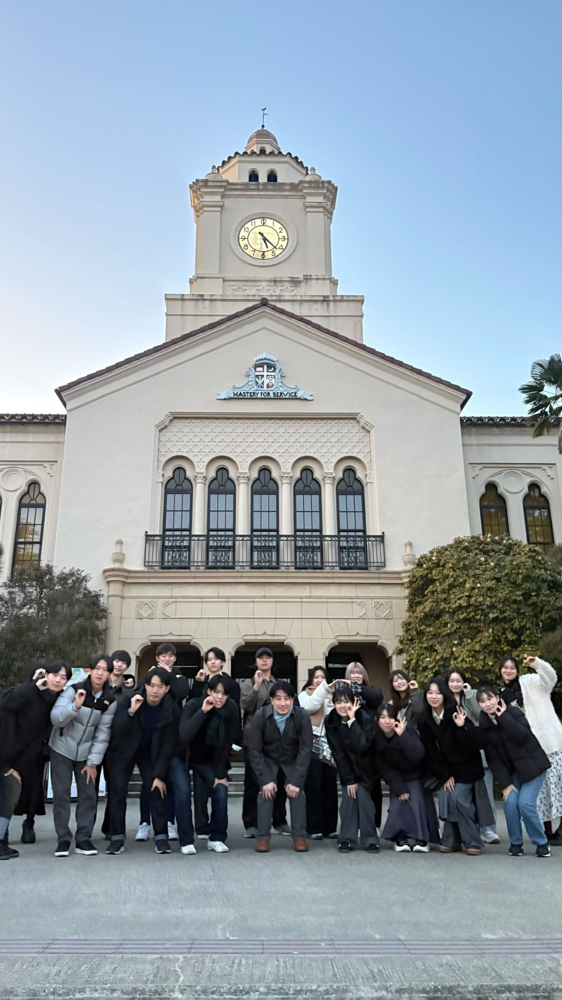

🌼
🌼
🍓 Welcome to Ozawa Seminar 🍓
どんな環境でも生き抜ける「自ら学ぶ力と人間性」
🌱 ゼミ生の日常活動の流れ 🤖

通年活動
2,3年共通
毎週のディスカッションで学年を超えた交流を。
毎週木曜日 17:00～19:00（日によって変わります）
２年次 春学期
財務会計学習
財務会計の輪読とチーム発表を繰り返し、知識を身につけよう！
毎週木曜日 ディスカッション後

３年次 春学期
プログラミング
AIを活用してコード作成・システム開発しよう
毎週木曜日 16:00～17:00

２・３年次 秋学期
合同ゼミ研究
学年ごと一体となって研究をし、研究発表で他大学と交流
毎週木曜日 16:00～17:00
プレゼンテーションするには、自分がその内容のプロにならないといけないので、自ずと深い理解ができました。担当外の人も、質問することで自分事として取り組めます。